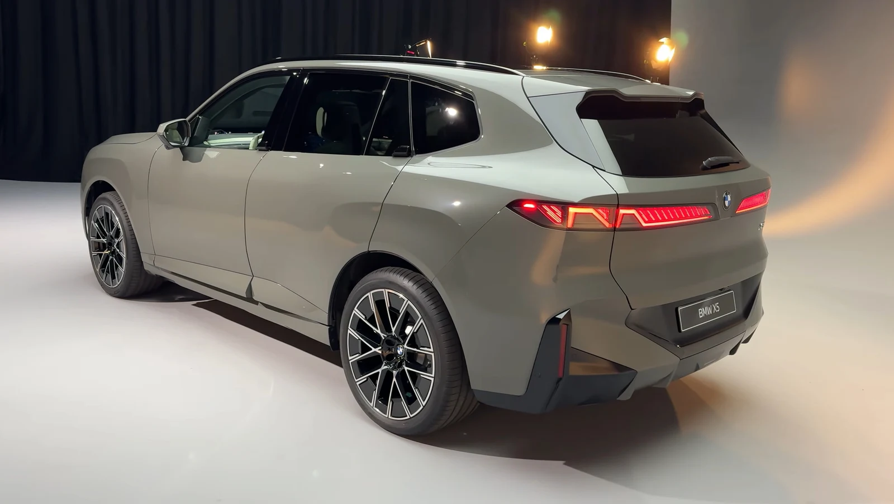

▲ 현행 BMW X5 — 중국 시장 전용 신형은 휠베이스를 130mm 늘려 상위 모델 X7급 공간을 확보한다
자동차 브랜드마다 라인업에는 암묵적인 서열이 있습니다. BMW로 치면 X7이 맏형, X5는 그 아래 차남 격입니다. 그런데 이 서열이 흔들리고 있습니다. 2027년 중국 시장에 나올 신형 X5가 휠베이스 3,165mm(글로벌 사양 대비 130mm 연장)에 8K 스트리밍·게임까지 지원하는 뒷좌석 시네마 스크린을 달고 나오면서, 사실상 X7급 호화 사양으로 재편됐기 때문입니다.
1. 130mm, 숫자보다 중요한 것은 '어디에 썼나'
130mm라는 수치 자체는 크지 않아 보일 수 있습니다. 하지만 이 여유분이 전부 뒷좌석 레그룸 확대에 투입됐다는 점이 핵심입니다. 늘어난 휠베이스 덕분에 앞뒤 오버행이 상대적으로 짧아 보이면서 비례가 한층 안정적으로 잡히는 효과까지 얻었습니다. 결과적으로 실내 공간은 준대형 SUV 수준으로, 겉모습의 비례는 오히려 더 스포티해진 셈입니다.

▲ 신세대 X5 패밀리의 전동 모델 iX5 — 대각선 라이트를 더블 X 형태로 재구성한 디자인이 신형 X5에도 이어진다
2. 뒷좌석에 영화관을 앉힌 이유
이번 X5의 상징은 단연 뒷좌석 시어터 스크린입니다. 8K 해상도로 스트리밍과 게임을 지원하고, 화상통화 기능까지 더해 차 안을 이동형 사무 공간으로도 쓸 수 있게 했습니다. 중국의 프리미엄 SUV 구매층 상당수가 운전기사를 두고 뒷좌석에 앉는 '오너드리븐이 아닌' 소비 패턴을 보인다는 점을 감안하면, 이 사양은 장식이 아니라 실사용을 겨냥한 설계입니다.
3. 왜 '중국 전용'인가 — 시장이 원하는 것과 회사가 줄 수 있는 것
이 신형 X5가 글로벌이 아닌 중국 전용으로 개발되는 이유는 명확합니다. 중국의 럭셔리 SUV 시장은 이미 롱휠베이스·초호화 사양이 표준으로 자리 잡은 곳입니다. 벤츠 GLS·아우디 Q9 같은 경쟁 모델들도 중국 사양에서 유독 더 화려한 옵션을 얹는 것과 같은 맥락입니다. BMW 입장에서는 X7의 정체성을 흐트러뜨리지 않으면서도, 중국 소비자가 원하는 '더 크고 더 화려한 X5'를 별도 라인으로 만들어 대응하는 전략을 택한 셈입니다.

▲ iX5 후면부 — 신형 X5 패밀리는 이런 절제된 후면 디자인에 늘어난 차체 비율을 더해 존재감을 키웠다
4. 디자인 — 더블 X와 웰컴 라이트쇼
외관에서는 대각선 형태의 라이트 아이콘이 눈에 띕니다. 고객 선택에 따라 이를 더블 X 형태로 바꿀 수 있는 것도 특징입니다. 여기에 라이트 스트립이 추가되며 전면부에 깊이감을 더했고, 이 조명은 웰컴·굿바이 애니메이션과 연동돼 차량에 다가서고 떠날 때마다 시각적인 연출을 제공합니다. 실용성 위주였던 기존 X5 디자인 언어에 감성적인 요소를 적극적으로 끌어들인 변화로 읽힙니다.

▲ 신세대 X5 패밀리의 센터 콘솔 — 크리스탈 소재 기어 셀렉터 등 고급화된 실내 디테일이 신형 X5의 시네마 스크린과 함께 완성된다
5. 시네마 스크린 말고도 — 조수석 스크린과 자율주행 기술
뒷좌석 시네마 스크린이 가장 화제가 됐지만, 이 차의 변화는 여기서 끝나지 않습니다. X5로는 처음으로 조수석 전용 디스플레이가 적용됩니다. 운전자의 시야를 방해하지 않으면서 동승자가 별도로 영상이나 정보를 즐길 수 있게 한 구성으로, 뒷좌석 시네마 스크린과 함께 온 가족이 각자의 화면을 갖는 셈입니다. 여기에 중국 자율주행 기술기업 모멘타와 협력한 엔드투엔드 AI 기반 자율주행 시스템이 탑재되고, 앞뒤 차축 모두에 어댑티브 에어서스펜션이 기본 장착됩니다. 겉으로 드러나는 스크린 경쟁뿐 아니라, 주행 보조와 승차감까지 X7급으로 끌어올리려는 전방위적인 상품성 강화가 이뤄진 셈입니다.
6. 국내 소비자가 알아둘 것
라인업 서열을 흔드는 '하극상'이 실제로는 시장별 전략의 산물이라는 점은 자동차 산업에서 낯선 일이 아닙니다. 다만 X5가 이 정도로 X7의 영역을 파고든 사례는 이례적이라, 중국 시장 반응에 따라 다른 지역에도 비슷한 사양이 번질지 지켜볼 대목입니다.